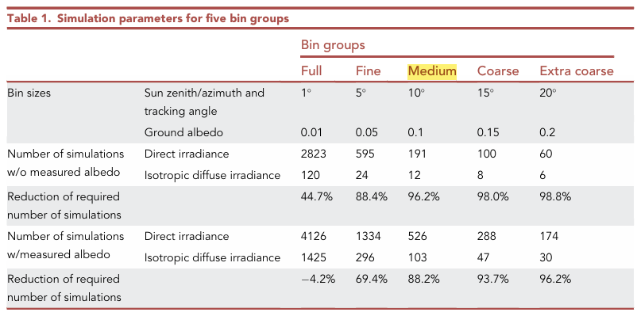

2026 | 10 | 02 Last compiled: 2026-10-20
Surface energy balance equation:
\[R_n = H + LE + G\]
where \(R_n\) is net radiation (\(\text{W m}^{-2}\)), \(H\) is sensible heat flux (\(\text{W m}^{-2}\)), \(LE\) is latent heat flux (\(\text{W m}^{-2}\)), \(G\) is soil heat flux (\(\text{W m}^{-2}\)).
2026 | 10 | 02 Last compiled: 2026-10-20
Penman-Monteith equation:
\[\lambda ET = \frac{\Delta (R_n - G) + \rho_a c_p \frac{(e_s - e_a)}{r_a}}{\Delta + \gamma \left(1 + \frac{r_s}{r_a}\right)}\]
Where \(ET_0\) is reference evapotranspiration (mm/day), \(R_n\) is net radiation, \(G\) is soil heat flux density, \(\Delta\) is the slope vapor pressure curve, and \(\gamma\) is the psychrometric constant.
2026 | 10 | 02 Last compiled: 2026-10-20
TBC
This part will mainly in literature review and RQ3.
2026 | 10 | 05 Last compiled: 2026-10-20
View factor models: models based on view or shape factors are often employed to estimate the rear surface irradiance, low computational demand and simplify.
Ray tracing models: Monte Carlo Ray Tracing, it models light transport achieving detailed and realistic results but requiring rather computationally expensive processes.
A study compare VF and RT
Ernst et al. (2024) Modelling bifacial irradiance – Step-by-step comparison and validation of view factor and ray tracing models
VF model: Jäger et al.’s in-house model (2D, analytical).
RT model: Ernst et al.’s own object-oriented Monte Carlo ray tracing framework (from their 2021 iScience paper).
Faiman model (adapted): used for cell temperature.
Computing: 256 virtual CPUs on the Nectar Research Cloud and the National Computational Infrastructure Australia. VF takes about 15 min on a single CPU. RT 256 virtual CPUs, runtime ranges from 20 min for the simplest model to 730 min for the most detailed.
Performance: Front 2 methods similar; Rear RT better. Reason: 支架，邊框導致VF高估光伏板背面光照。Ernst et al. (2022) Accelerating the simulation of annual bifacial illumination of real photovoltaic systems with ray tracing
Problem: Ray tracing is slow, and a full year has 5,326 timesteps. Running one simulation per timestep is too expensive.
Solution: Group timesteps with similar conditions into bins. **Simulate one case per bin (at the bin’s mean value) and reuse the result for every timestep in that bin**.
Campana et al. (2021) Optimisation of vertically mounted agrivoltaic systems
3 main sub-models: solar radiation and shading, PV, crop yield
solar radiation and PAR
PAR decomposition model from Gu et al. (1999), solar transposition algorithm refers to Perez 1990 (Perez et al., 1987, 1990). The ground-reflected albedo radiation, and the total solar radiation on the front and rear side of the bifacial PV modules have been calculated with the models from Martín and Ruiz, (2005), Khan et al. (2017), and Sun et al. (2018).
pv model
PV power production is calculated with the five-parameter, single-diode model as described in Duffie and Beckman (2013). The characteristic of the bifacial PV module refers to Jolywood D72N 380 Wp (Jolywood, 2021).
shading loss
The shading calculations have been performed following the approach presented in Cascone et al. (2011).
Key factors: solar vector S, shading factor beam, shading factor diffuse.
Solar vector S ⇀ in a coordinate system centred on a local horizontal plane at an arbitrary location on the Earth, and is defined as follows (Stine and Geyer, 2001).
The shading factor for the diffuse irradiance is calculated using the approach used in Li and Lam (2004) and in Cascone et al. (2011).
crop model
Environmental Policy Integrated Climate (EPIC) model developed by Williams et al. (1989).
The model converts the daily intercepted PAR into biomass. The biomass production is then reduced by various stresses (i.e., water stress, or temperature stress, or fertiliser stress) and harvest index.
The actual crop yield Ya (t/ha) is given by the equation (Williams et al., 1989).
optimization
Maximises the LER, minimises the fluctuation of the power, maximises the system annual electricity production.
Created by Kwan Yu Chuk using R Markdown in RStudio.